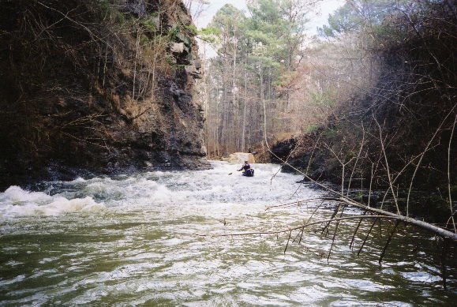
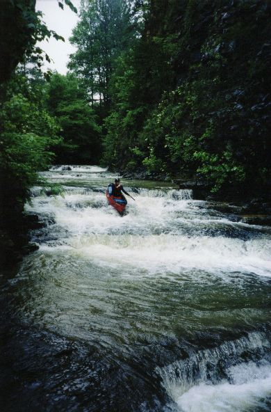
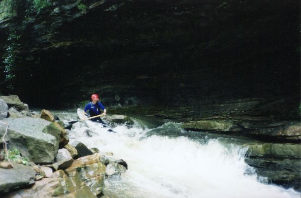
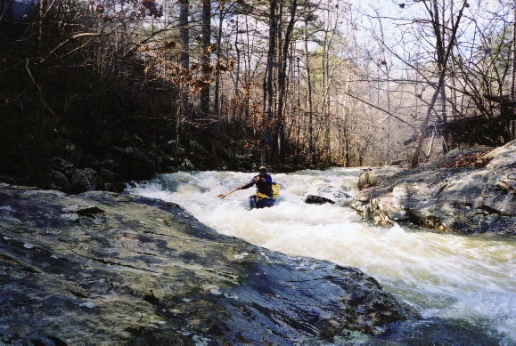
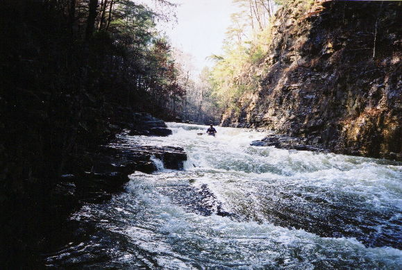
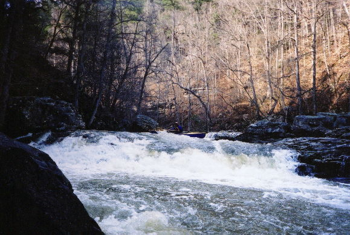
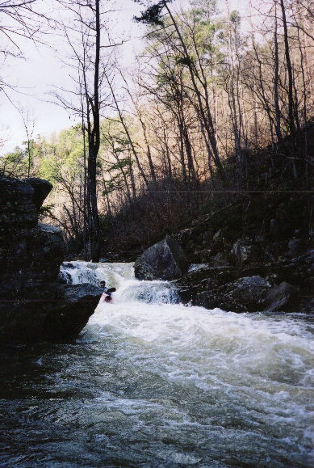
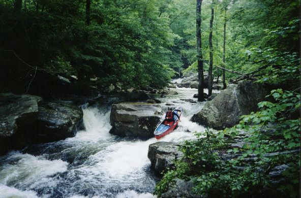
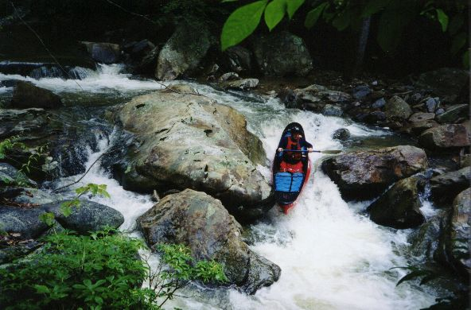
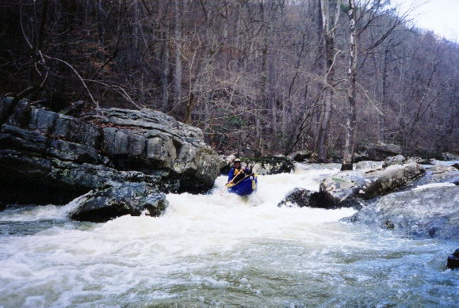

Line Creek
|  | A slide on the upper section. If this is not scrapy, the lower part may frighten even the strong. |
|  | The first triple drop rapid in the steeper last section. We'll have to get creative and name some of these I suppose. This is 0", which is way too low. |
|  | The drop at the end of the icebox undercut cliff. Low water. |
|  | Quality stuff at 6" |
|  | Many a slide, 6" |
|  | Dave B gets himself all sideways above what is sometimes a serious hole. |
|  | The toughest drop. I think it is 2nd from the bottom. A hole forms in this washout that can reach out and touch you. |
|  | The same rapid at seriously low water. |
|  | Cool shot at 0" |
|  | This may be the same rapid... |